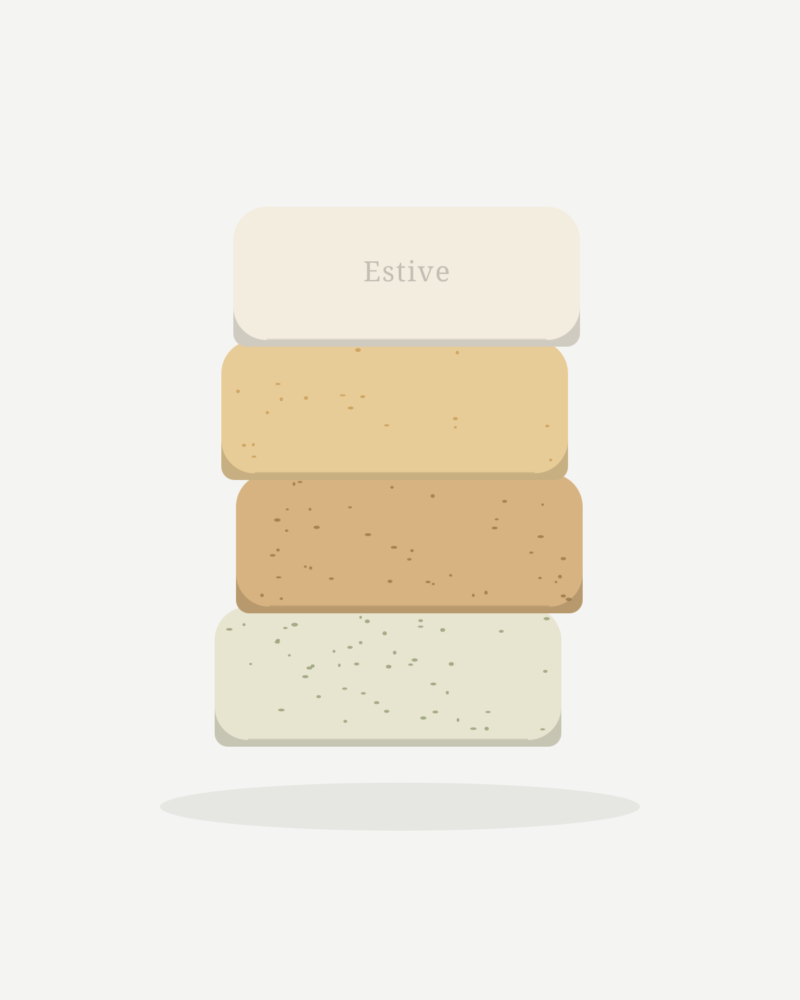

Élever le plus simple des gestes.
Savons au suif de bœuf, saponifiés à froid et affinés dix semaines en Haute-Savoie. Le moins d’ingrédients possible, et chacun a sa raison d’être.
La gamme
Quatre pains de cent grammes, une même matière première.

Trois ingrédients suffisent à faire un savon.
Avant l’huile de palme et les tensioactifs de synthèse, on savonnait avec ce que l’élevage produisait déjà. Le suif possède une composition en acides gras proche de celle du sébum : il nettoie sans priver la peau de ce qui la protège.
Le nôtre vient de la ferme de Clemensaigne, à Longessaigne.
Hydratation
Il aide la peau à garder son eau, bien après le rinçage.
Barrière cutanée
Il respecte le film qui protège l’épiderme.
Douceur
Ni parfum de synthèse, ni conservateur, ni sulfate.
Sobriété
Un coproduit de l’élevage : aucune terre cultivée pour lui.
L’atelier, en quatre temps
Des cuvées de 25 pains, coulés, découpés et pesés à la main.
-

I
Fonte
Le suif est fondu avec de l’eau puis filtré, jusqu’à devenir une matière blanche et neutre.
-

II
Saponification à froid
Il est mêlé à la solution de soude sans cuisson : la glycérine reste dans le pain.
-

III
Moulage
La pâte est coulée en moule, laissée à prendre, puis découpée et pesée pain par pain.
-

IV
Affinage
Dix semaines au minimum, à l’air libre. Le pain perd son eau et gagne en douceur.